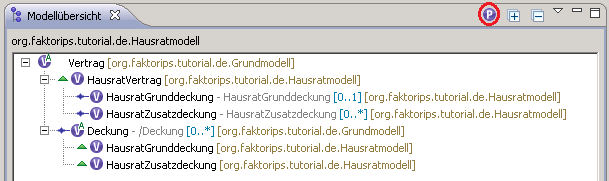
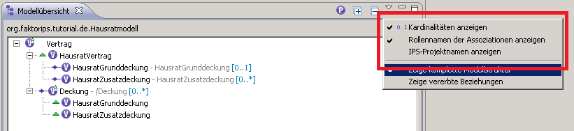

The Modeloverview provides two different views for model exploring purposes. View number one shows the selected FaktorIPS-project and all referenced projects, too. It displays the overall inheritance hierarchy and all Master-to-Detail-compositions and aggregations. The purpose of the second view is to provide a better overview over the dependencies in large projects. This view displays only elements of the selected project. Dependencies which are defined in the referenced projects are inherited and will be displayed as inherited associations in the current project. This article will refer to the first view as Complete View and to the second view as Inheritance View.
These two screenshots show the structure of the the Faktor-IPS tutorial project Hausratmodell. It references the base project Grundmodell. To reduce the amount of displayed elements the Product Component Types and Policy Component Types will be shown separately. The view can be switched via the red marked button. After switching the view the icon of the button will change to the the other component-type icon.
Faktor-IPS model projects consist of Policy- and Product-component-types which are represented by the
usual icons  and
and
 . The project structure
will be shown as is, that means it displays the inheritance structure and associations (aggregations or master-to
detail compositions) which are relevant for the selected project. Underlying projects and superfluous elements
from the base projects will not be shown. Components which are a subtype of the parent
component have the
. The project structure
will be shown as is, that means it displays the inheritance structure and associations (aggregations or master-to
detail compositions) which are relevant for the selected project. Underlying projects and superfluous elements
from the base projects will not be shown. Components which are a subtype of the parent
component have the  -icon and the
-icon and the
 -icon is used
for all associated types.
-icon is used
for all associated types.


The purpose of the inheritance view is to visualize the associations, which have been defined in the base projects,
in the currently selected project. It allows a quick overview of the relations in a project. An example of
this view for the previously introduced Hausratmodell is given by the following figure. It contains
only elements from the Hausratmodell. Instead of the element Vertrag we have its subtype
Hausratvertrag as root-element. It inherits all associations from its parent element. Therefore it has
now four associatiated elements which are shown in the view. In addition to the two direct associations it
has two indirect (inherited) associations to the same elements. They have been retrieved via the Deckungstyp
association of Vertrag. The  -icon
marks them as inherited associations and allows to distinguish them from direct associations.
This icon will only be applied to associations which have been inherited from another project, inside of the
selected project no associations will be inherited!
-icon
marks them as inherited associations and allows to distinguish them from direct associations.
This icon will only be applied to associations which have been inherited from another project, inside of the
selected project no associations will be inherited!

Which view has to be displayed can be configured in the view-menu. Just select one of the provided views.

Labels can be used to display additional information about the shown elements. They always contain the name of the component type, but they can be configured to show information about the underlying association, cardinality and corresponding project, too.

The labels are always structured as shown above. First comes the element name, which will always be displayed. Next comes the target role name of the association. A / indicates an association which defines a derived union. The role name can be complemented by the associations cardinality. At last it is possible to show the project name of the current type. This is especially useful when using the complete view.
Which parts of the labels are displayed can be configured in the view-menu.

Inheritance view: Indicates that this association has been inherited from a base project